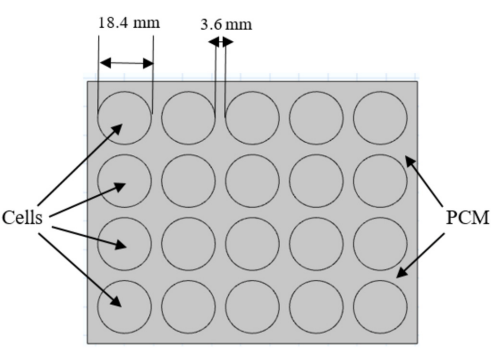

Summary
My senior design capstone team and I are developing a battery box for
our team's upcoming solar car iteration, for which I am also a suspension engineer. Our aim is to
design and manufacture a battery box by the end of next semester that maintains interior temperatures below an
optimal 35 °C and ventilation in accordance with safety regulations Sections 8 & 10. In addition to maintaining
optimal temperatures, we are also securing the battery system at expected speeds, in 5g crashes,
and to keep the driver safe.
My focus is on modeling heat generation of the battery cells, given
standard sensor metrics that our battery management system (BMS) collects, such as voltage, temperature, and current.
My goal is to implement reactive cooling with fans as a function of these metrics. I was excited to start tackling this part
of the project given my experience with programming, data collection, and
particularly because of my interest in heat transfer. As we now shift into design conception, I am also considering different
ways to orient the battery cells & high-voltage components within the box to maintaing steady and low temperatures inside.